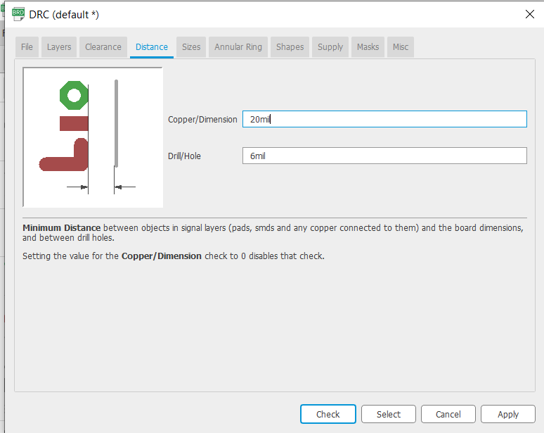

Brain storming
A microcontroller is a compact, reasonably priced microprocessor that is made to carry out the particular functions of embedded systems, such as displaying microwave information and receiving distant signals, among others.
The CPU, memory (RAM, ROM, EPROM), Serial ports, peripherals (timers, counters, etc.), and other components make up a generic microcontroller.
Component
1. Arduino UNO used for applying the code.
2.ATmega328p microcontroller.
3. Linear regulator 7805 to regulate power dissipation.
4. DC power connector socket.
5. slide switch.
6. Push button.
7. 5mm leds (one red led and another green led).
8. 16MHz crystal oscillator.
9. Ceramic disc capacitor 22 pF.
10. Ceramic disc capacitor 0.1 µF.
11. capacitor 10 µF.
12. 330 Ohm resistor.
13. 10K Ohm resistor.
14. 2.54 mm female pin header.
Component selection in eagle
After selecting the components I used eagle to create the circuit schematic by gragging the components required. I tried to use all of them as through hole components.
The ATmega328P chip, the brain of the board, is the first major component. a voltage regulator that controls the input voltage to produce a 5V pure output that is mostly utilized by the ATmega320p processor. a 16MHz crystal oscillator, which generates an electrical signal at a certain frequency. Simply said, it does the timekeeping so you don't have to. You may check the board's health and functionality using certain LEDs. The board may be connected to a DC power supply using the DC Plug. You may connect the board to your computer using the USB port. Pin headers are used to connect it to the outside world (sensors, motors, LEDs) through jumper wires.
Creating Schematic
After collecting all of them as shown in the next picture. I started to connect the components together.
Connected schematic is shown in the next pictrure
layout creation
Eagle software is also capable of creating the pcb layout by generating a file with (.brd) extention. the icon responsible for that conversion is the following highlighted icon.
DRC settings
There are 3 sections in the drc to change before creating any trace in the pcb
dragging components
the components are arranged in a way that there wouldn't be any crossed traces.

Auto routing
Auto routing is an available option in eagle that generates routes to the pcb. these routes must be seperated from each other. Sometimes the autorouting is successful but on our case it was a fail.

At first it seemed perfect like any happy beginning, but as predicted there were some traces that were not connected correctly so I tried to connect them manually.
circuit improvements
It was impossible to generate the traces without linking to each other by the components dragged because we are creating a one layer pcb with too many components. So the only option in front of me was to delete some of the unnecessary components.
The remaining components are shown in the following schematic
new schematic
The remaining components were connected again to perform the same previous fuctions but with less available pins for vcc and gnd for example.
new routing
This time autorouting option was not used, all routes were connected manually to avoid the issue of isolating some parts of the pcb from each other. This isolation is responsible for the linked traces. the final pcb is shown below finalllyyyy!!!!!!!
That's it I hope this was useful for you ^^♥️
Files:
1. https://drive.google.com/file/d/1H5bvV5bYJJm8tAlz1pYbbN1totYz9ECT/view?usp=sharing
2. https://drive.google.com/file/d/1H5bvV5bYJJm8tAlz1pYbbN1totYz9ECT/view?usp=sharing